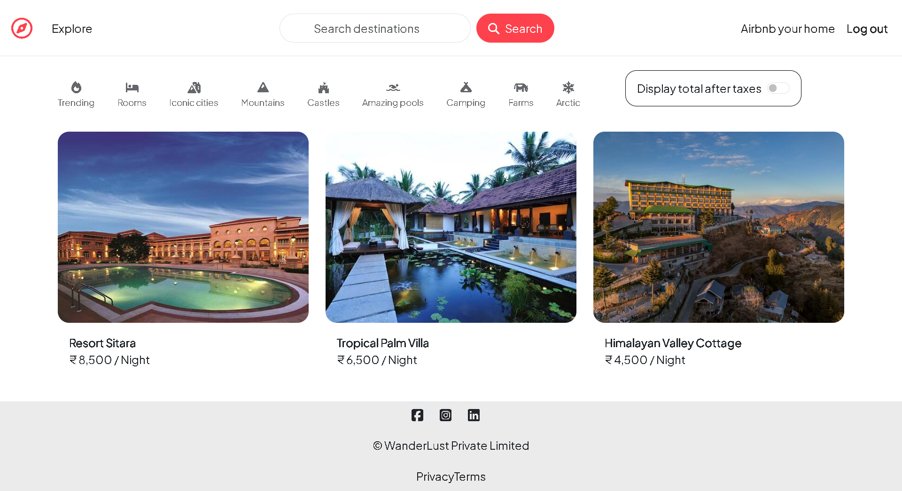
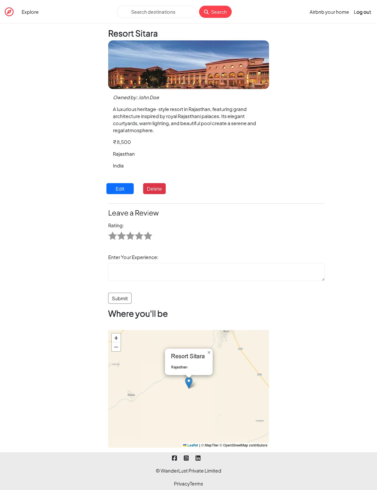
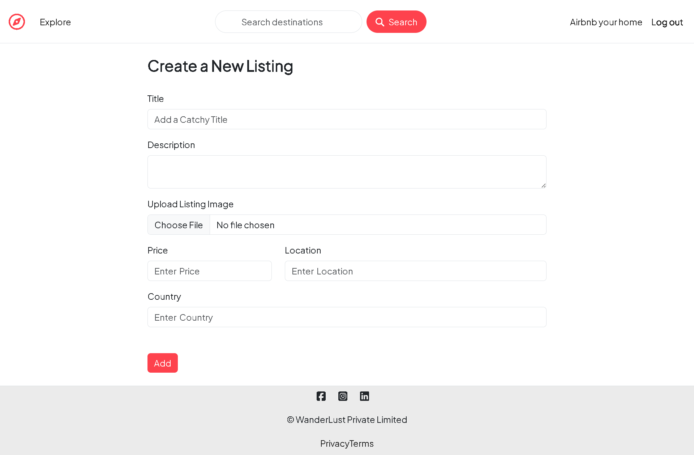
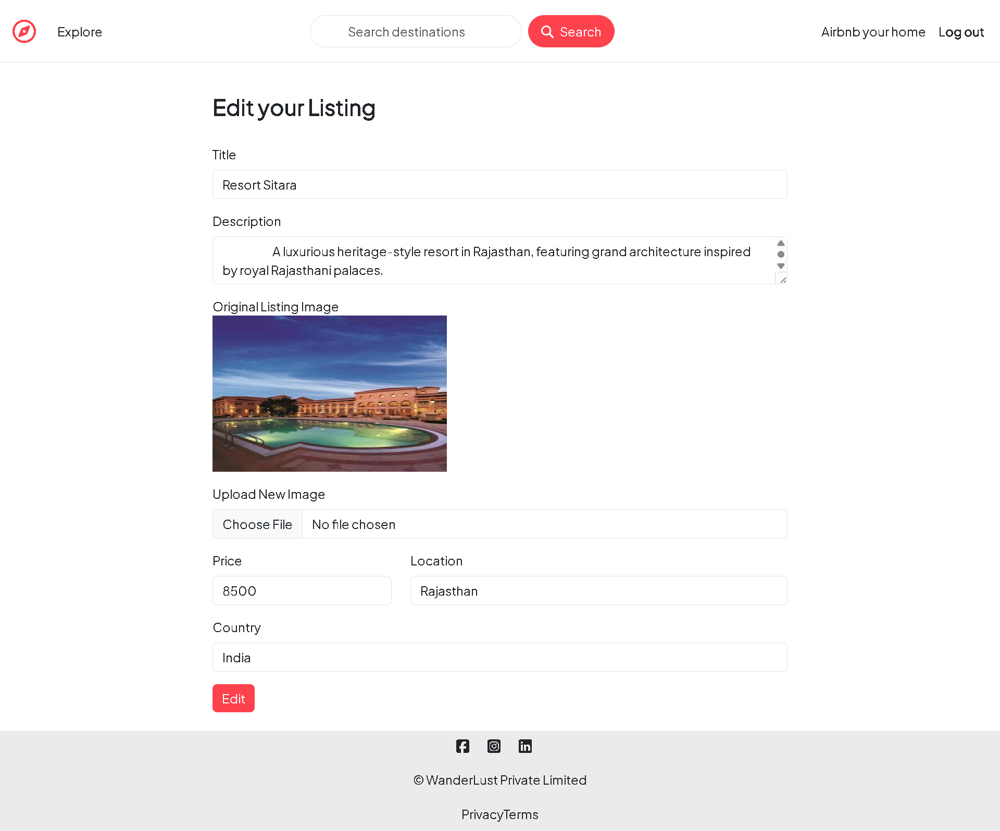
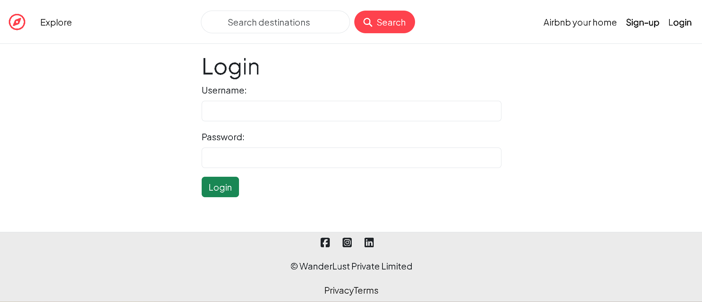
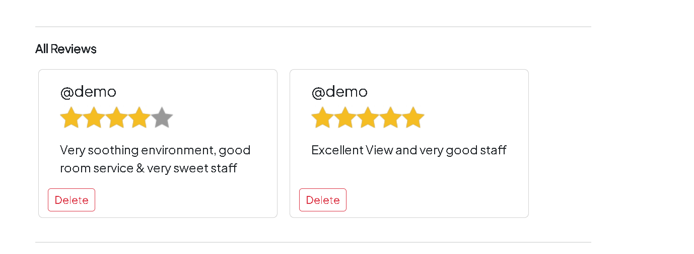

Authentication
& authorization
Secure account access with owner-only actions for listings and reviews.
Project 01 · Full stack
A full-stack accommodation platform built with the MERN ecosystem.

01 · Overview
WanderLust is an Airbnb-inspired full-stack web application where users can discover accommodation listings, view detailed properties, manage their own listings, and share reviews through a responsive web experience.
02 · Technology
03 · Key features
Secure account access with owner-only actions for listings and reviews.
Browse stays through a clean, image-led discovery experience.
Create, edit, and remove listings through purposeful host controls.
Share stay feedback and make each listing more useful to travellers.
Clear server routes connect the interface, business logic, and data.
04 · Architecture
05 · Product tour





06 · Challenges & learnings
I learned to protect listing and review actions with authorization rules, so users can only manage content they own.
Building RESTful routes and modelling data with MongoDB showed how a full-stack product stays organised as it grows.
Adding reviews taught me how to connect user-generated content with clear ownership and meaningful product feedback.
07 · Next chapter
WanderLust is live and ready to explore.